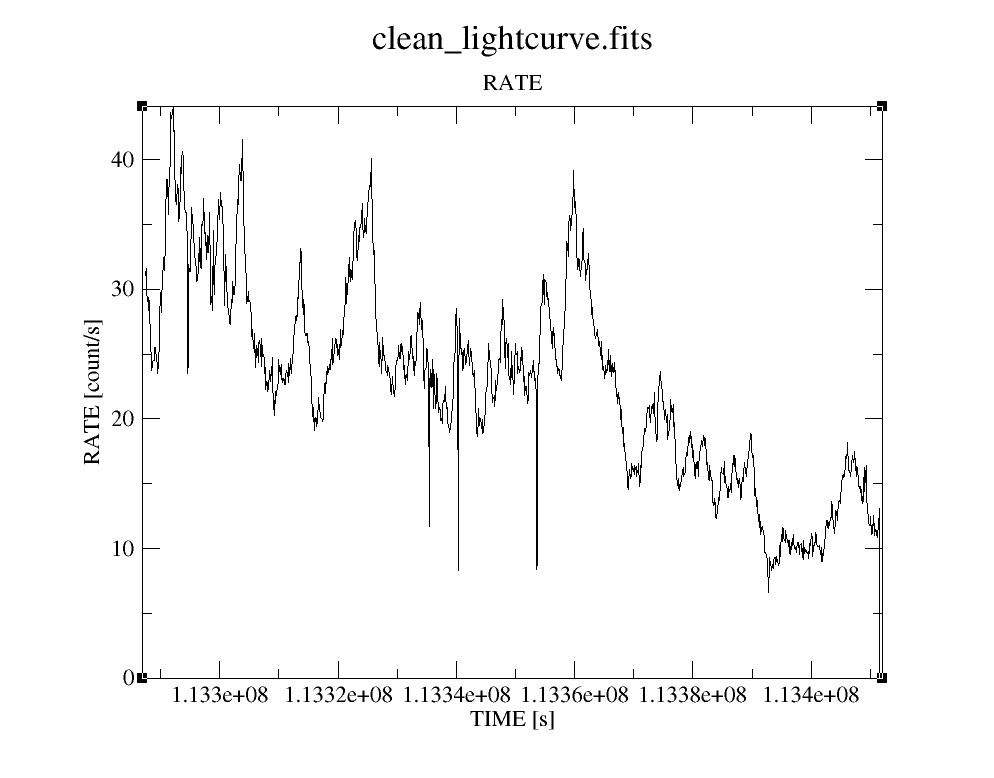
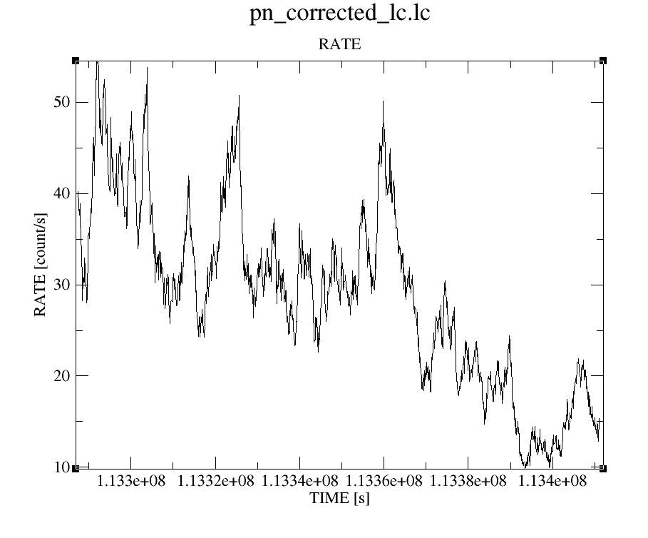
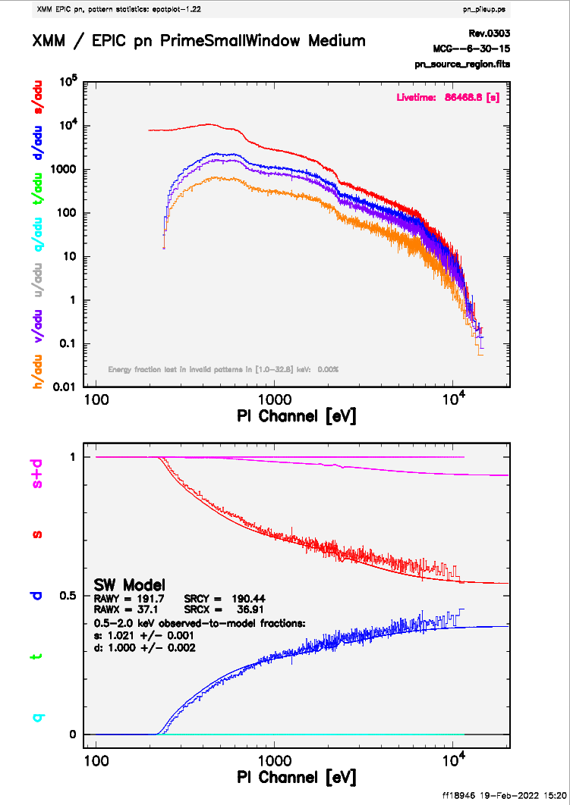
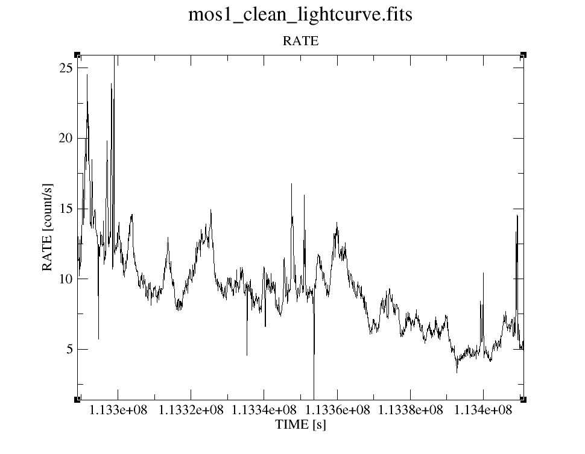
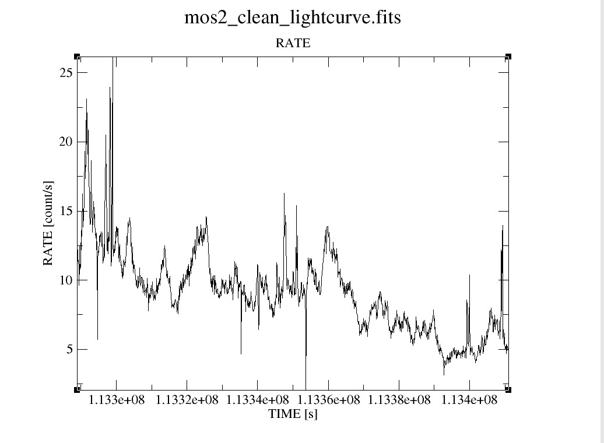
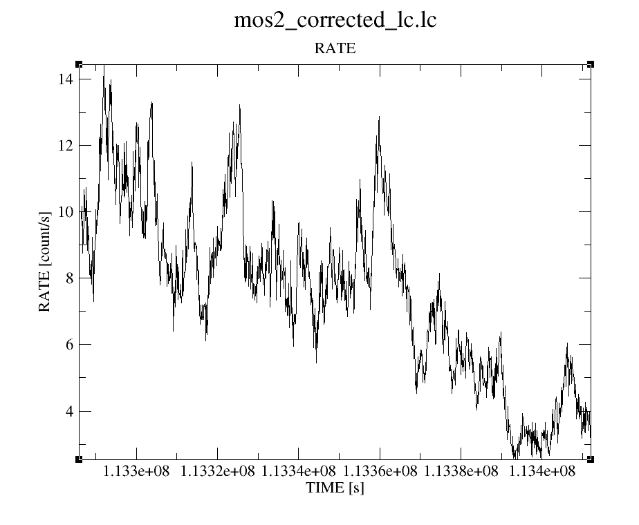
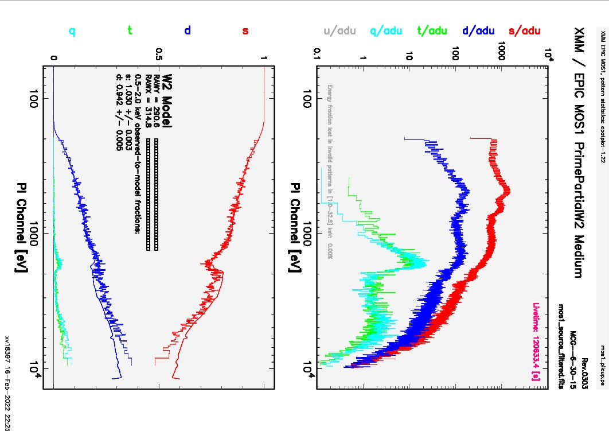
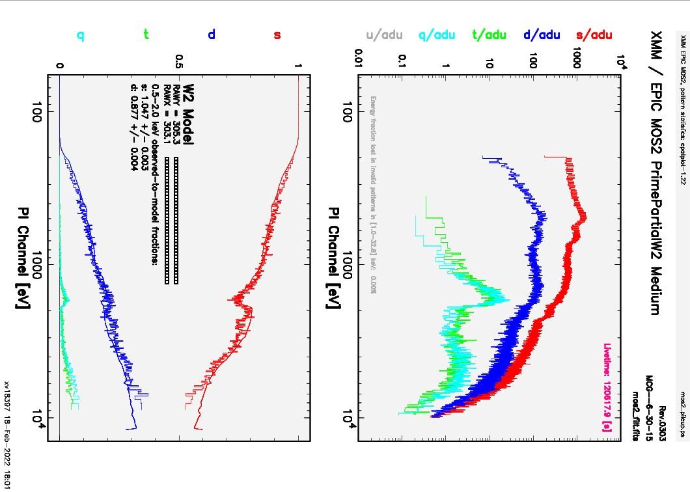

from IPython.display import Image
4. Revolution 303¶
4.1. PN Data¶
The odf for rotation 303 was downloaded as before using the odfid. The same data processing techniques were copied to produce spectra for the PN and MOS cameras. The spectra for the 2 MOS cameras were merged.
4.1.1. Creating the Lightcurve¶
The lightcurve for this revolution differs from the 1st, but still has the same flaring event. It was filtered using a different method than before as using gtibuild didn’t seem to work.
Image(filename="303_figs/pn_lc.png")

4.1.1.1. Corrected Lightcurve¶
Image(filename="303_figs/pn_corrected_lc.png")

4.1.1.2. Pileup¶
Following https://heasarc.gsfc.nasa.gov/docs/xmm/abc/node8.html#SECTION00880000000000000000
Extracting source and background regions and spectra
evselect table=pn_clean.fits energycolumn=PI withfilteredset=yes filteredset=pn_source_region.fits keepfilteroutput=yes filtertype=expression expression='((FLAG==0) && (PATTERN <= 4) && ((X,Y) IN circle(26273,27909,641.7))' withspectrumset=yes spectrumset=pn_source_spectrum.fits spectralbinsize=5 withspecranges=yes specchannelmin=0 specchannelmax=20479
evselect table=pn_clean.fits energycolumn=PI withfilteredset=yes filteredset=pn_bkg_region.fits keepfilteroutput=yes filtertype=expression expression='((FLAG==0) && (PATTERN <= 4) && ((X,Y) IN circle(29257,25919,1124)' withspectrumset=yes spectrumset=pn_bkg_spectrum.fits spectralbinsize=5 withspecranges=yes specchannelmin=0 specchannelmax=20479
epatplot set=pn_source_region.fits plotfile=pn_pileup.ps useplotfile=yes withbackgroundset=yes backgroundset=pn_bkg_region.fits
Image(filename="303_figs/pn_pileup.png")

4.1.1.3. Spectrum¶
Image(filename="303_figs/pn_laor2.png")
---------------------------------------------------------------------------
FileNotFoundError Traceback (most recent call last)
<ipython-input-3-696be734cf84> in <module>
----> 1 Image(filename="303_figs/pn_laor2.png")
~\Anaconda3\lib\site-packages\IPython\core\display.py in __init__(self, data, url, filename, format, embed, width, height, retina, unconfined, metadata)
1195 self.unconfined = unconfined
1196 super(Image, self).__init__(data=data, url=url, filename=filename,
-> 1197 metadata=metadata)
1198
1199 if self.width is None and self.metadata.get('width', {}):
~\Anaconda3\lib\site-packages\IPython\core\display.py in __init__(self, data, url, filename, metadata)
618 self.metadata = {}
619
--> 620 self.reload()
621 self._check_data()
622
~\Anaconda3\lib\site-packages\IPython\core\display.py in reload(self)
1226 """Reload the raw data from file or URL."""
1227 if self.embed:
-> 1228 super(Image,self).reload()
1229 if self.retina:
1230 self._retina_shape()
~\Anaconda3\lib\site-packages\IPython\core\display.py in reload(self)
643 """Reload the raw data from file or URL."""
644 if self.filename is not None:
--> 645 with open(self.filename, self._read_flags) as f:
646 self.data = f.read()
647 elif self.url is not None:
FileNotFoundError: [Errno 2] No such file or directory: '303_figs/pn_laor2.png'
4.2. MOS Data¶
4.2.1. Lightcurves¶
Image(filename="303_figs/mos1_lc.png")

Image(filename="303_figs/mos1_corrected_lc.png")

4.2.1.1. Mos2¶
Image(filename="303_figs/mos2_lc.png")

Image(filename="303_figs/mos2_corrected_lc.png")

4.2.2. Pile up¶
The same regions for the source and background regions were used from revolution 301 and the source and background spectra were extracted to produce the pileup
Image(filename="303_figs/mos1_pileup.png")

Image(filename="303_figs/mos2_pileup.png")

The data for both mos cameras was merged as before.